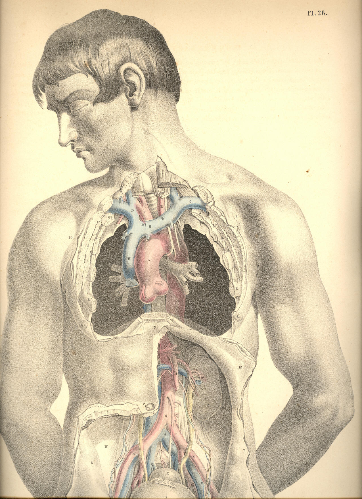

SURGICAL ANATOMY by JOSEPH MACLISE
COMMENTARY ON PLATE 26.
THE RELATION OF THE INTERNAL PARTS
TO THE EXTERNAL SURFACE OF THE BODY.
An exact acquaintance with the normal character of the external form,
its natural prominences and depressions, produced by the projecting
swell of muscles and points of bone, &c., is of great practical
importance to the surgeon. These several marks described on the
superficies he takes as certain guides to the precise locality and
relations of the more deeply situated organs. And as, by dissection,
Nature reveals to him the fact that she holds constant to these
relations, so, at least, may all that department of practice which he
bases upon this anatomical certainty be accounted as rooted in truth and
governed by fixed principles. The same organ bears the same special and
general relations in all bodies, not only of the human, but of all other
species of vertebrata; and from this evidence we conclude that the same
marks on surface indicate the exact situation of the same organs in all
similar bodies.
The surface of the well-formed human body presents to our observation
certain standard characters with which we compare all its abnormal
conditions. Every region of the body exhibits fixed character proper to
its surface. The neck, the axilla, the thorax, the abdomen, the groin,
have each their special marks, by which we know them; and the eye, well
versed in the characters proper to the healthy state of each, will
soonest discover the nature of all effects of injury--such as
dislocations, fractures, tumours of various kinds, &c. By our
acquaintance with the perfect, we discover the imperfect; by a
comparison with the geometrically true rectangled triangle, or circle,
we estimate the error of these forms when they have become distorted;
and in the same way, by a knowledge of what is the healthy normal
standard of human form, we diagnose correctly its slightest degree of
deformity, produced by any cause whatever, whether by sudden accident,
or slowly-approaching disease.
Now, the abnormal conditions of the surface become at once apparent to
our senses; but those diseased conditions which concern the internal
organs require no ordinary exercise of judgment to discover them. The
outward form masks the internal parts, and conceals from our direct
view, like the covers of a closed volume, the marvellous history
contained within. But still the superficies is so moulded upon the
deeper situated structures, that we are induced to study it as a map,
which discourses of all which it incloses in the healthy or the diseased
state. Thus, the sternum points to A, the aorta; the middle of the
clavicles, to C, the subclavian vessels; the localities 9, 10 of the
coracoid processes indicate the place of the axillary vessels; the
navel, P, points to Q, the bifurcation of the aorta; the pubic
symphysis, Z, directs to the urinary bladder, Y. At the points 7, 8, may
be felt the anterior superior spinous processes of the iliac bones,
between which points and Z, the iliac vessels, V, 6, pass midway to the
thigh, and give off the epigastric vessels, 2, 3, to the abdominal
parietes. Between these points of general relations, which we trace on
the surface of the trunk of the body, the anatomist includes the entire
history of the special relations of the organs within contained. And not
until he is capable of summing together the whole picture of anatomical
analysis, and of viewing this in all its intricate relationary
combination--even through and beneath the closed surface of living
moving nature, is he prepared to estimate the conditions of disease, or
interfere for its removal.
When fluid accumulates on either side of the thoracic compartment to
such an excess that an opening is required to be made for its exit from
the body, the operator, who is best acquainted with the relations of the
parts in a state of health, is enabled to judge with most correctness in
how far these parts, when in a state of disease, have swerved from these
proper relations. In the normal state of the thoracic viscera, the left
thoracic space, G A K N, is occupied by the heart and left lung. The
space indicated within the points A N K, in the anterior region of the
thorax, is occupied by the heart, which, however, is partially
overlapped by the anterior edge of the lung, PLATE 22. If the thorax be
deeply penetrated at any part of this region, the instrument will wound
either the lung or the heart, according to the situation of the wound.
But when fluid becomes effused in any considerable quantity within the
pleural sac, it occupies space between the lung and the thoracic walls;
and the fluid compresses the lung, or displaces the heart from the left
side towards the right. This displacement may take place to such an
extent, that the heart, instead of occupying the left thoracic angle, A
K N, assumes the position of A K* N on the right side. Therefore, as the
fluid, whatever be its quantity, intervenes between the thoracic walls,
K K*, and the compressed lung, the operation of paracentesis thoracis
should be performed at the point K, or between K and the latissimus
dorsi muscle, so as to avoid any possibility of wounding the heart. The
intercostal artery at K is not of any considerable size.
In the normal state of the thoracic organs, the pericardial envelope of
the heart is at all times more or less uncovered by the anterior edge of
the left lung, as seen in PLATE 22. When serous or other fluid
accumulates to an excess in the pericardium, so as considerably to
distend this sac, it must happen that a greater area of pericardial
surface will be exposed and brought into immediate contact with the
thoracic walls on the left side of the sternal median line, to the
exclusion of the left lung, which now no longer interposes between the
heart and the thorax. At this locality, therefore, a puncture may be
made through the thoracic walls, directly into the distended
pericardium, for the escape of its fluid contents, if such proceeding be
in other respects deemed prudent and advisable.
The abdominal cavity being very frequently the seat of dropsical
effusion, when this takes place to any great extent, despite the
continued and free use of the medicinal diuretic and the hydragogue
cathartic, the surgeon is required to make an opening with the
instrumental hydragogue--viz., the trocar and cannula. The proper
locality whereat the puncture is to be made so as to avoid any large
bloodvessel or other important organ, is at the middle third of the
median line, between P the umbilicus, and Z the symphysis pubis. The
anatomist chooses this median line as the safest place in which to
perform paracentesis abdominis, well knowing the situation of 2, 3, the
epigastric vessels, and of Y, the urinary bladder.
All kinds of fluid occupying the cavities of the body gravitate towards
the most depending part; and therefore, as in the sitting or standing
posture, the fluid of ascites falls upon the line P Z, the propriety of
giving the patient this position, and of choosing some point within the
line P Z, for the place whereat to make the opening, becomes obvious. In
the female, the ovary is frequently the seat of dropsical accumulation
to such an extent as to distend the abdomen very considerably. Ovarian
dropsy is distinguished from ascites by the particular form and
situation of the swelling. In ascites, the abdominal swell is
symmetrical, when the body stands or sits erect. In ovarian dropsy, the
tumour is greatest on either side of the median line, according as the
affected ovary happens to be the right or the left one.
The fluid of ascites and that of the ovarian dropsy affect the position
of the abdominal viscera variously In ascites, the fluid gravitates to
whichever side the body inclines, and it displaces the moveable viscera
towards the opposite side. Therefore, to whichever side the abdominal
fluid gravitates, we may expect to find it occupying space between the
abdominal parietes and the small intestines. The ovarian tumour is, on
the contrary, comparatively fixed to either side of the abdominal median
line; and whether it be the right or left ovary that is affected, it
permanently displaces the intestines on its own side; and the sac lies
in contact with the neighbouring abdominal parietes; nor will the
intestines and it change position according to the line of gravitation.
Now, though the above-mentioned circumstances be anatomically true
respecting dropsical effusion within the general peritonaeal sac and
that of the ovary, there are many urgent reasons for preferring to all
other localities the line P Z, as the only proper one for puncturing the
abdomen so as to give exit to the fluid. For though the peritonaeal
ascites does, according to the position of the patient, gravitate to
either side of the abdomen, and displace the moveable viscera on that
side, we should recollect that some of these are bound fixedly to one
place, and cannot be floated aside by the gravitating fluid. The liver
is fixed to the right side, 11, by its suspensory ligaments. The
spleen occupies the left side, 12. The caecum and the sigmoid flexure of
the colon occupy, R R*, the right and left iliac regions. The colon
ranges transversely across the abdomen, at P. The stomach lies
transversely between the points, 11, 12. The kidneys, O, occupy the
lumbar region. All these organs continue to hold their proper places, to
whatever extent the dropsical effusion may take place, and
notwithstanding the various inclinations of the body in this or that
direction. On this account, therefore, we avoid performing the operation
of paracentesis abdominis at any part except the median line, P Z; and
as to this place, we prefer it to all others, for the following cogent
reasons--viz., the absence of any large artery; the absence of any
important viscus; the fact that the contained fluid gravitates in large
quantity, and in immediate contact with the abdominal walls anteriorly,
and interposes itself between these walls and the small intestines,
which float free, and cannot approach the parietes of the abdomen nearer
than the length which the mesenteric bond allows.
If the ovarian dropsy form a considerable tumour in the abdomen, it may
be readily reached by the trocar and cannula penetrating the line P Z.
And thus we avoid the situation of the epigastric vessels. The puncture
through the linea alba should never be made below the point, midway
between P and Z, lest we wound the urinary bladder, which, when
distended, rises considerably above the pubic symphysis.
Amongst the many mechanical obstructions which, by impeding the
circulation, give rise to dropsical effusion, are the following:--An
aneurismal tumour of the aorta, A, or the innominate artery, [Footnote
1]
F, may press upon the veins, H or D, and cause an oedematous swelling
of the corresponding side of the face and the right arm. In the same way
an aneurism of the aorta, Q, by pressing upon the inferior vena cava, T,
may cause oedema of the lower limbs. Serum may accumulate in the
pericardium, owing to an obstruction of the cardiac veins, caused by
hypertrophy of the substance of the heart; and when from this cause the
pericardium becomes much distended with fluid, the pressure of this upon
the flaccid auricles and large venous trunks may give rise to general
anasarca, to hydrothorax or ascites, either separate or co-existing.
Tuberculous deposits in the lungs and scrofulous bronchial glands may
cause obstructive pressure on the pulmonary veins, followed by effusion
of either pus or serum into the pleural sac. [Footnote 2] An abscess or
other tumour of the liver may, by pressing on the vena portae, cause
serous effusion into the peritonaeal sac; or by pressure on the inferior
vena cava, which is connected with the posterior thick border of the
liver, may cause anasarca of the lower limbs. Matter accumulating
habitually in the sigmoid flexure of the colon may cause a hydrocele, or
a varicocele, by pressing on the spermatic veins of the left side. It is
quite true that these two last-named affections appear more frequently
on the left side than on the right; and it seems to me much more
rational to attribute them to the above-mentioned circumstance than to
the fact that the left spermatic veins open, at a disadvantageous right
angle, into the left renal vein.
[Footnote 1: The situation of this vessel, its close relation to the
pleura, the aorta, the large venous trunks, the vagus and phrenic
nerves, and the uncertainty as to its length, or as to whether or not a
thyroid or vertebral branch arises from it, are circumstances which
render the operation of tying the vessel in cases of aneurism very
doubtful as to a successful issue. The operation (so far as I know) has
hitherto failed. Anatomical relations, nearly similar to these, prevent,
in like manner, an easy access to the iliac arteries, and cause the
operator much anxiety as to the issue.]
[Footnote 2: The effusion of fluid into the pleural sac (from whatever
cause it may arise) sometimes takes place to a very remarkable extent. I
have had opportunities of examining patients, in whom the heart appeared
to be completely dislocated, from the left to the right side, owing to
the large collection of serous fluid in the left pleural sac. The
heart's pulsations could be felt distinctly under the right nipple.
Paracentesis thoracis was performed at the point indicated in PLATE 26.
In these cases, and another observed at the Hotel Dieu, the heart and
lung, in consequence of the extensive adhesions which they contracted in
their abnormal position, did not immediately resume their proper
situation when the fluid was withdrawn from the chest. Nor is it to be
expected that they should ever return to their normal character and
position, when the disease which caused their displacement has been of
long standing.]
DESCRIPTION OF PLATE 26.
A. The systemic aorta. Owing to the body being inclined forwards, the
root of the aorta appears to approach too near the lower
boundary (N)
of the thorax.
B. The left brachio-cephalic vein.
C. Left subclavian vein.
D. Right brachia-cephalic vein.
E. Left common carotid artery.
F. Brachio-cephalic artery.
G G*. The first pair of ribs.
H. Superior vena cava.
I. Left bronchus.
K K*. Fourth pair of ribs.
L. Descending thoracic aorta.
M. Oesophagus.
N. Epigastrium.
O. Left kidney.
P. Umbilicus.
Q. Abdominal aorta, at its bifurcation.
R R*. Right and left iliac fossae.
S. Left common iliac vein.
T. Inferior vena cava.
U. Psoas muscle, supporting the right spermatic vessels.
V. Left external iliac artery crossed by the left ureter.
W. Right external iliac artery crossed by the right ureter.
X. The rectum.
Y. The urinary bladder, which being fully distended, and viewed from
above, gives it the appearance of being higher than usual
above the
pubic symphysis.
Z. Pubic symphysis.
2. The left internal abdominal ring complicated with the epigastric
vessels, the vas deferens, and the spermatic vessels.
3. The right internal abdominal ring in connection with the like vessels
and duct as that of left side.
4. Superior mesenteric artery.
5, 6. Right and left external iliac veins.
7, 8. Situations of the anterior superior iliac spinous processes.
9, 10. Situations of the coracoid processes.
11, 12. Right and left hypochondriac regions.

Plate 26
COMMENTARY ON PLATE 27